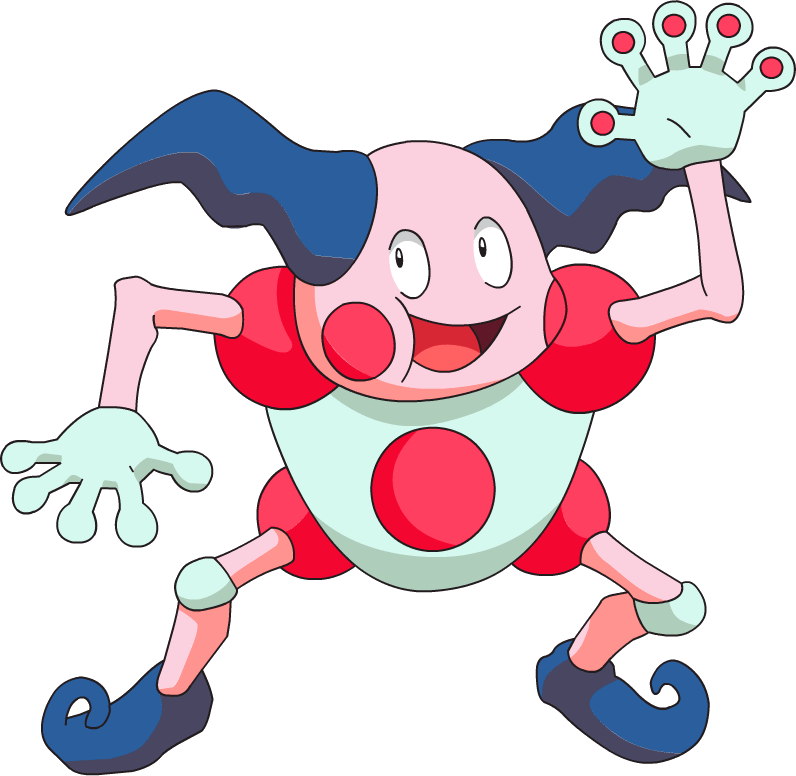
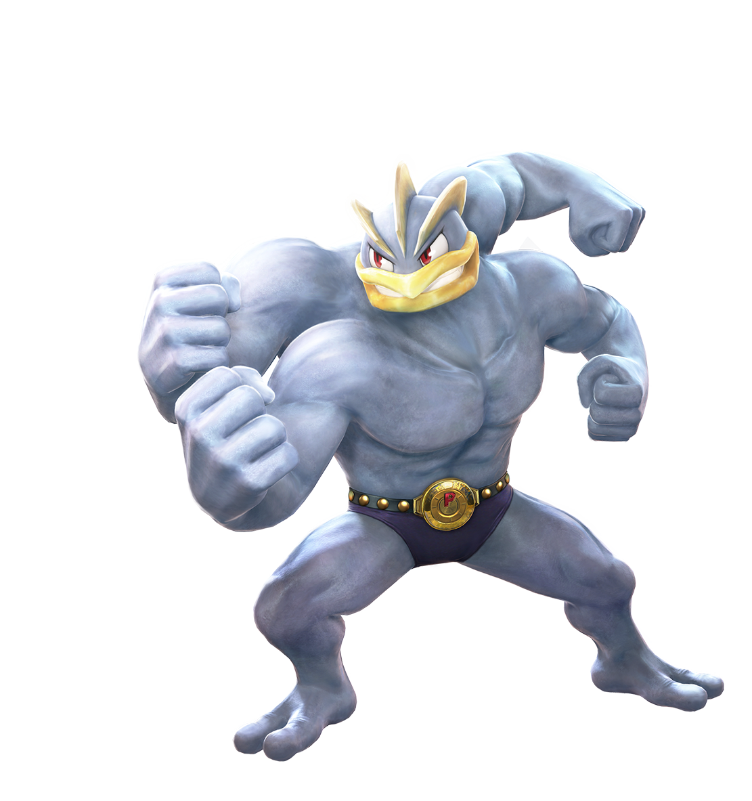

-
Pikachu
HP 300

Descrição
Pikachu é um Pokémon roedor meio gordinho, com o pêlo amarelo em todo o seu corpo. As orelhas de Pikachu são longas e chegam a um ponto com pontas pretas. Ele tem uma boca pequena, que se assemelha a um lado tres, tem olhos negros com os alunos brancos e dois círculos vermelhos em suas bochechas.
-
Charizard
HP 700

Descrição
Charizard é um Pokémon do tipo Fogo e Voador. Ele é a forma evoluída de Charmeleon quando chega no nível 36. Ele tambem é a forma final de Charmander.
-
Mewtwo
HP 1000

Descrição
Mewtwo é uma criatura com uma postura humanóide, mas tem algumas características felinas. O corpo de Mewtwo é cinzento-roxo e uma cauda longa totalmente da cor roxa. Mewtwo tem três dígitos circulares em cada apêndice.
-
Squirtle
HP 250

Descrição
Squirtle é baseado em uma tartaruga marinha. Tem uma pele azul claro e usa um casco e junto também tem uma calda longa azul.
-
Lucario
HP 860

Descrição
Lucario é um Pokémon com pele que é predominantemente azul e preto. Possue uma espiga curta e redonda na parte de trás de cada pata dianteira, para além de um terceiro sobre o peito. O focinho de Lucario e as orelhas são mais longos do que sua pré-evolução Riolu. Ele também desenvolveu quatro pequenos apêndices pretos em sua cabeça, que se levantam quando Lucario lê ou manipula a aura.
-
Mr Mime
HP 520
Descrição
mr-mime é um pokémon de tipo fada e psiquicos. Pokémon tipo fada são fortes contra pokémon do tipo Lutador, Inseto, Noturno mas eles são fracos contra pokémon do tipo Veneno, Aço.
-
Machamp
HP 700
Descrição
Machamp tem a força para lançar qualquer coisa bem longe. Entranto, qualquer trabalho que requer cuidado e destreza faz com que os seis braços se emaranharem. Este Pokémon tende a entrar em ação antes de pensar.
-
Metapod
HP 80

Descrição
O escudo que cobre o corpo deste Pokémon é tão duro como uma laje de ferro. Metapod não se move muito. Ele ainda permanece assim porque está preparando suas entranhas macias para a evolução dentro da casca dura.